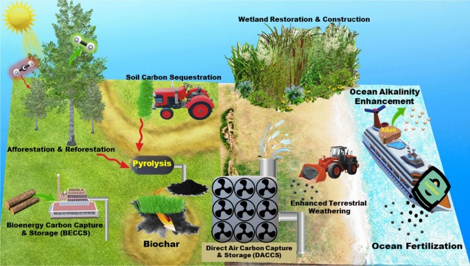
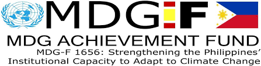
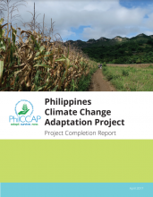
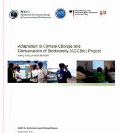
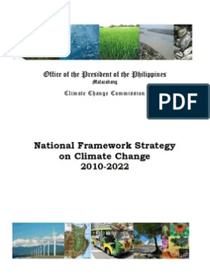

The Philippines, being highly vulnerable to the impacts of climate change, has initiated several adaptation programs and projects to enhance resilience and reduce risks.
Millennium Development Goals Fund 1656: Aims to strengthen the Philippines institutional capacity to adapt to climate change and is funded by the Government of Spain.
Philippine Climate Change Adaptation Project: Its primary goal is to develop the resiliency of farms and natural resource management to the effects of climate change funded by the Global Environmental Facility (GEF) through the World Bank.
Adaptation to Climate Change and Conservation of Biodiversity Project: Sponsored by GTZ Germany.
National Framework Strategy on Climate Change: Envisioned to develop the adaptation capacity of communities funded by the GTZ Germany.
With these set of programs and everyone's engagement, we can all combat the destructive impact of climate change. Nothing is too hard for a resilient and adaptable country.
